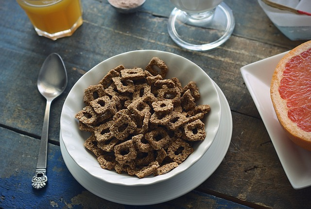
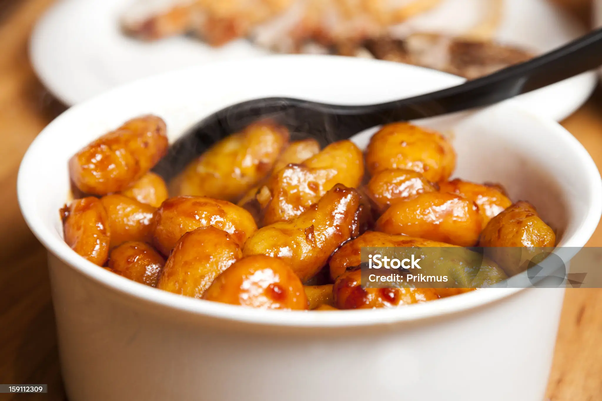
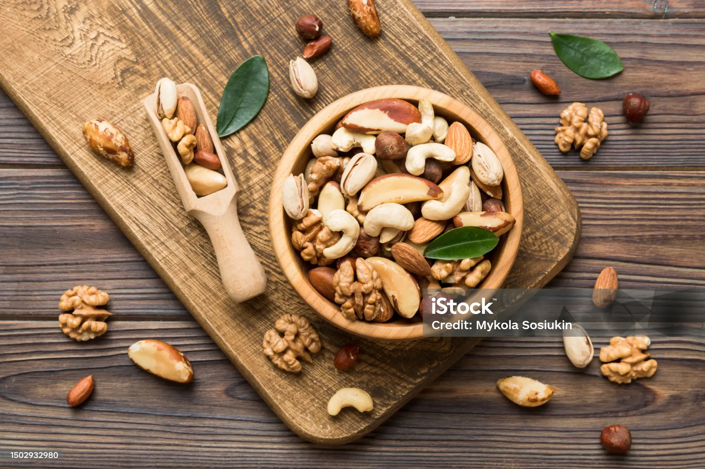

Ravitsemus ja Diabetes
Diabeteksen hallinta edellyttää terveellistä ja tasapainoista ruokavaliota. Ruokavaliossa tulee keskittyä runsaasti kuitua sisältäviin hiilihydraatteihin, vähärasvaisiin proteiineihin ja terveellisiin rasvoihin. Säännölliset ateriat ja verensokerin tarkkailu ovat keskeisessä roolissa.


Kuitupitoiset hiilihydraatit, kuten täysjyväleipä ja kaura, auttavat pitämään verensokerin tasaisena.

Vähärasvaiset proteiinit, kuten kana ja kala, tukevat lihasmassaa ilman liiallista rasvaa.

Terveelliset rasvat, kuten avokado ja pähkinät, ovat tärkeitä solujen toiminnalle.